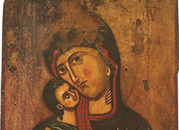
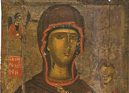
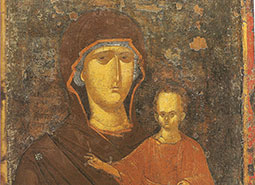
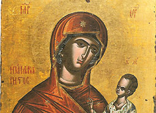
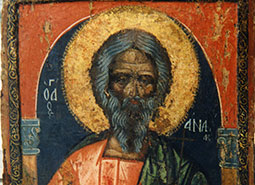
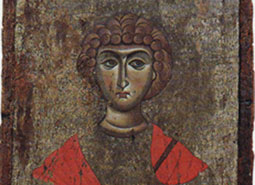

ENGLISH
Σύνδεσμοι
Επικοινωνία
Βυζαντίνο Μουσείο Βέροιας
Toggle navigation
Μουσείο
Συλλογή
Επίσκεψη
Νέα
Συλλογή
Αναζήτηση
Αναζήτηση
Active Filters:
ξύλο
μάρμαρο

Αμφιπρόσωπη εικόνα με τον άγιο Γεώργιο και τον άγιο Ανδρέα

Παναγία Γλυκοφιλούσα (Πελαγονίτισσα)

«Παρέστη η βασίλισσα εκ δεξιών σου…»

Αμφιρόσωπη εικόνα με την Παναγία Οδηγήτρια και την Παναγία Οδηγήτρια την "Παμμακάριστο"

Επιτύμβια ενεπίγραφη πλάκα που αναφέρεται στον κόμη Φατάλιο, τη σύζυγό του Κελερίνη και τον εγγονό του Σιλβανό, 492 μ.Χ.

Μαρμάρινος μετρητής υγρών
Απορρίμματα κεραμικού εργαστηρίου
Ψηφιδωτό δάπεδο από το νάρθηκα της παλαιοχριστιανικής βασιλικής του οικοπέδου Πορφύρη
1
2
3
4
5